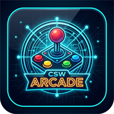

CSW
.
ARCADE
Neo Geo MVS / AES · Netplay P2P · Consoles Rétro
Arcade
PlayStation
Sega
Nintendo
Java / Gameloft
Cache : …
En ligne
Paramètres
Neo Geo MVS / AES (181 jeux · Netplay)
Catalogue Arcade & Rétro (MAME, Neo Geo, 64-bit, 32-bit)
Moteur local FBNeo WASM + EmulatorJS · Raccourcis Alt+1 à Alt+4
Quitter
Jeu
Moteur
+ Crédit (5)
Start (1)
Pixel net
Ratio original
Redémarrer
Plein écran
Paramètres
Paramètres globaux de la plateforme
Fermer
Mode affiché au démarrage
Arcade (Neo Geo & Rétro)
PlayStation
Sega
Nintendo
Java / Gameloft
Filtre vidéo (Lecteur unifié)
Pixels nets (Pixelated)
Lissage doux (Smooth)
Format d’écran (Lecteur unifié)
Ratio d’origine
Étiré plein écran
Volume par défaut (
80%
)
Affichage des catalogues
Grille
Liste
Couper le son (Muet sur tous les émulateurs)
Configuration Matérielle (Tactile, Manette, Clavier P1/P2, CRT)
Les réglages de la Configuration Matérielle NeoRageX sont automatiquement partagés avec PlayStation, Sega, Nintendo et Consoles Rétro.
Ouvrir Configuration Matérielle
État du stockage local
Analyse du stockage…
Vider le cache ROMs
Réinitialiser les préférences
Raccourcis : Alt+1 à Alt+4 · Échap pour fermer